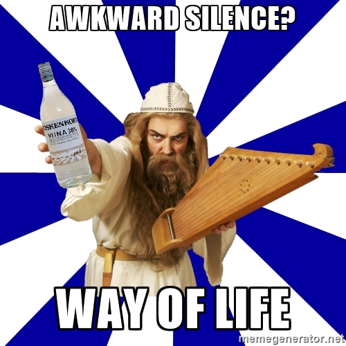
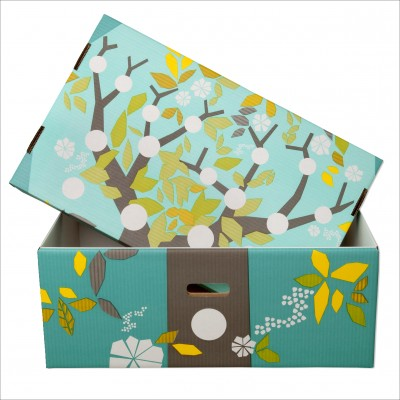
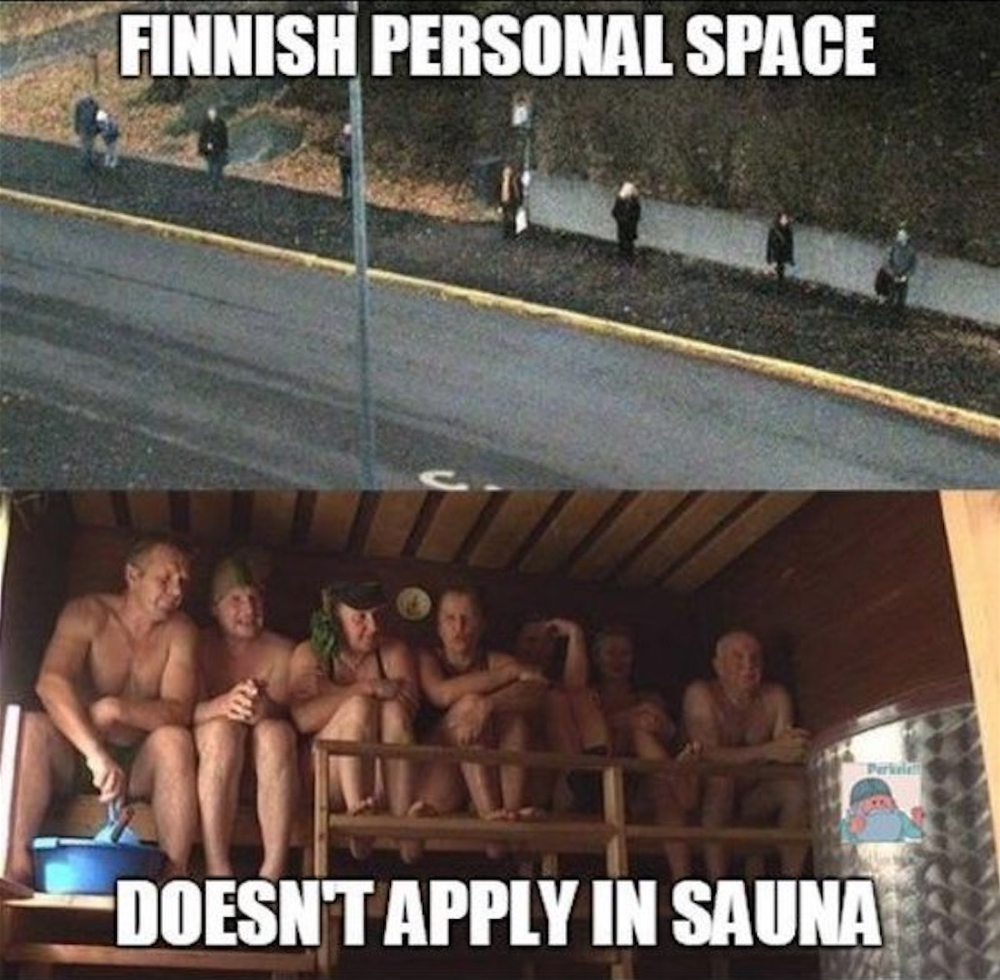
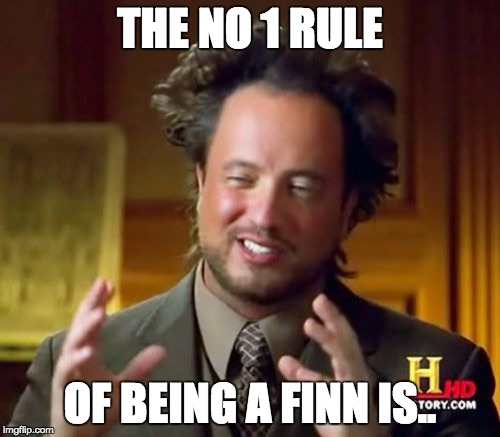
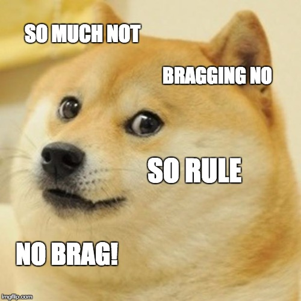
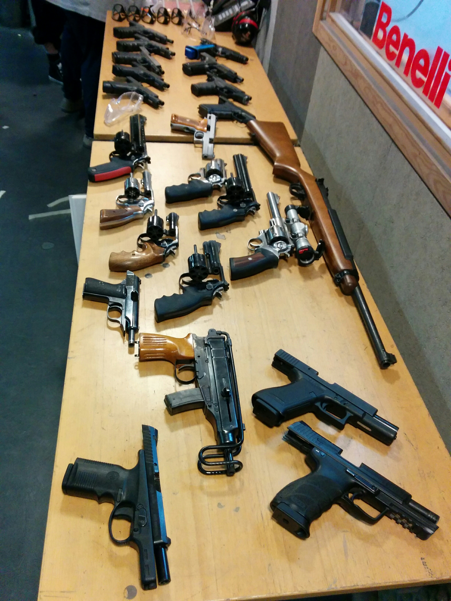
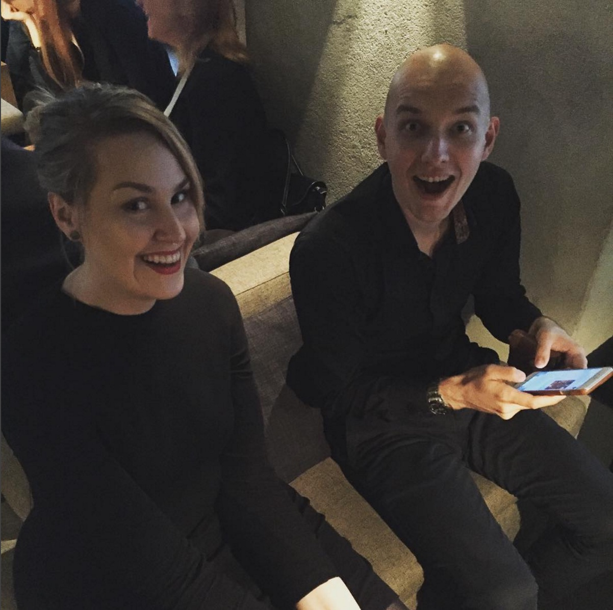

Restel.fi: built by humans, for humans
Bart Feenstra & Jonna Tiainen
Finland





What do I do:
- Holistic Agile Coach
- Scrum Master
- Code Newbie: Java & JavaScript
Houstonian

Houston Inc.
- System deliveries
- System integration
- Agile Training
Drupal & community
- Drupal user for a year and a half
- First time DrupalCon speaker
Engineer
- Knows some PHP, Python, Java, & Javascript, with a pinch of SQL
- I ♥ automation
Drupal & community
- Drupal user for 11, contributor for 9, and core developer for 8 years
- Founded the Dutch Drupal foundation
- Conference and meetup organizer
Druid
- 27 Druids
- 2 offices: Helsinki (2012) & Amsterdam (2015)
- 3 full-time remote employees
- Finland’s largest hotel and restaurant operator
- Operates 43 hotels and over 240 restaurants
- Serves several websites and web applications
The Project
A long time ago
in a galaxy far, far away..
Strating point:
War of the worlds
- Hotelworld, Eventworld, Restaurantworld, etc.
- The worlds did not communicate
Strating point:
War of the worlds
- Content chaos
- Confusing to customers
- Expensive to maintain all the worlds
End goal:
End of the worlds
- Fusion of the world in to new Restel.fi
- Controlled content
End goal:
End of the worlds
- Easy to get information
- Feeling of safety
The situation looked & felt like:
Going in to a battle
- Define your strategy
- Don't mind the rubbles
- Take on the challenge!
The monster must be caged!
The GoJIRA
- Fear can be a monster
- You have to cage that fear!
Kick-ass sidekick
The Druids
- Knowledge on Drupal 8
- Best vibes
- Scrum & Agile
Going thru through project is like
Rafting a river
- Don't drown in the stream
- Trust your partners
- Avoid the waterfalls
How do we get thru this?
The solution:
Scrum fit!
- Don't quit during the first weeks
- Repeat untill it feels natural
- Reward yourself
The last surprise:
Down with the illness
dis·trib·ute
To scatter or spread.
Why distribute teams?
- Hometown
- Different offices (3 for this project)
- Working from home
- Sickness
- Appointments outside 'office' hours
- ...
- ...
- Laundry
Grease monkeys hard at work
Contribute
Team night out

Team night out

A special kind of sunrise
Has anyone seen our Product Owner?
And where's our infra expert?